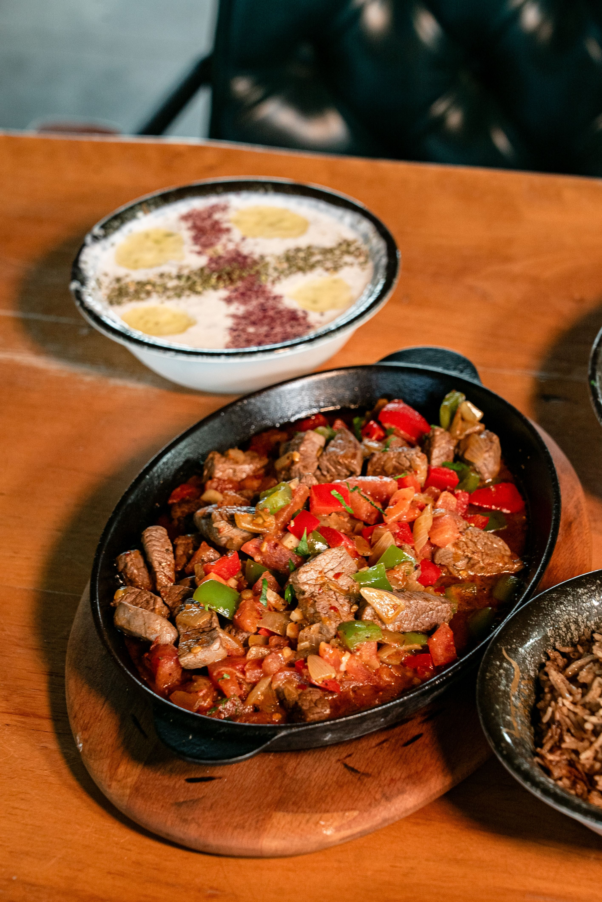

Tibs

Description
Tibs is an Ethiopian traditional dish, some would argue the most loved and enjoyed dish, that is made with beef, lamb, or goat cooked with spices, onions and pepper.
Tibs can be made in a myriad of ways which result in different types like Derek tibs,Awaze tibs, andRegular tibs.
Ingredients
- 1 lb (450g) beef or lamb, cut into small cubes or strips
- 2 tbsp niter kibbeh (Ethiopian spiced clarified butter) or regular butter/oil
- 1 medium red onion, sliced
- 2-3 garlic cloves, minced or sliced
- 1-2 fresh green or red chili peppers (jalapeño or serrano), sliced
- 1 fresh sprig of rosemary
- Salt and black pepper to taste
- Optional(not optional if you'r Ethiopian): 1 tbsp berbere spice or awaze paste if you want it spicy
Stpes
- Brown the meat: Heat a dry pan or skillet over high heat. Add the meat and a pinch of salt.
Cook until the meat releases its natural juices and the liquid evaporates (about 5 minutes).
- Add fat and aromatics: Add the niter kibbeh (or oil/butter) and onions to the pan.
Stir-fry on high heat for 3 to 5 minutes until the onions turn soft and translucent.
- Finish with herbs and chili: Toss in the garlic, green chilies, and fresh rosemary.
Cook for 1 to 2 more minutes so the fresh aromas pop, then remove from heat.
- Serve:Serve hot straight from the pan, traditionally laid over a soft layer of injera.
Home page